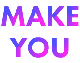

Learning
UIは見た目を整えるだけではなく、ユーザーの行動の流れを設計するものだと学びました。

UI Design / App Design
リサーチ / UI設計 / 画面設計 / テスト
授業テーマ「ToDo × 〇〇」に沿って制作した、健康習慣や運動習慣を続けるためのアプリUIです。SNS上の食事改善、自宅トレーニング、エクササイズ動画などを保存し、自分用のフォルダやToDoとして組み合わせられるようにしました。
健康のために運動や食事改善を始めようとしても、継続することは簡単ではありません。10〜30代のユーザーがSNSで健康や運動に関する情報を集めていることに注目し、情報を見るだけで終わらせず、行動につなげる体験を考えました。

情報が散らばる
健康や運動に関する情報が複数のSNSに分かれている。
保存しても活用しにくい
あとから見返しづらく、実際の行動につながりにくい。
続ける仕組みがない
運動や食事改善を習慣として続けるきっかけが不足している。
MAKE YOUでは、SNSで見つけた健康・運動情報をただ保存するだけでなく、自分のToDoとして組み合わせられるようにしました。情報収集から実践までの距離を短くすることで、ユーザーが自分のペースで健康習慣を続けられる体験を目指しました。
Service Design


健康・運動に関する投稿だけを見られるSNS型の画面

気になった投稿や動画を、自分のフォルダに保存できる機能

保存したエクササイズ動画を組み合わせ、自分用のToDoリストとして管理する

条件を達成するとメダルがもらえる仕組みで、継続のモチベーションを高める

ユーザビリティテストでは、複数のSNSに散らばっていた健康・運動情報を一箇所にまとめられる点や、動画ごとToDoリストに入れられる点が便利そうだという声をもらいました。一方で、継続を促すためにはリマインド機能やクエストのような仕組みがあると良いという意見もありました。
UIは見た目を整えるだけではなく、ユーザーの行動の流れを設計するものだと学びました。
今後は、リマインド機能やクエスト機能など、習慣化を支える仕組みをさらに検討したいです。